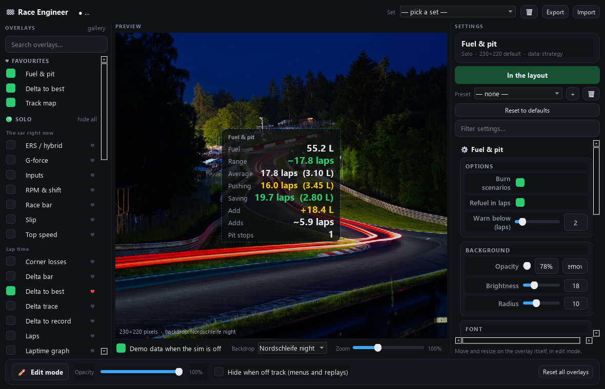
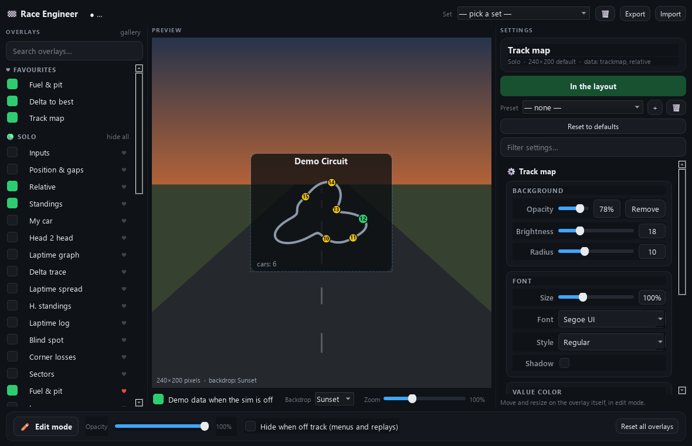
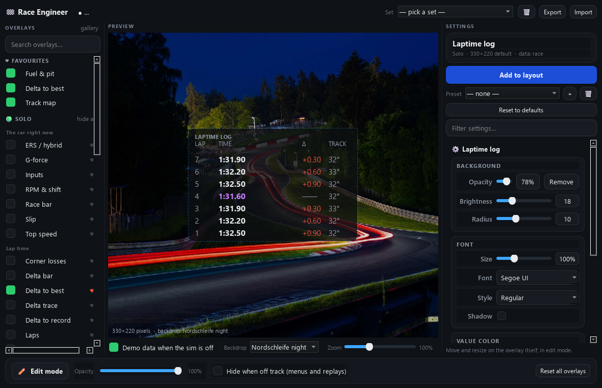

Four commands and you are on track with 47 overlays and a dashboard. It runs entirely on your own machine.
git clone https://github.com/YarRace/iracing-race-engineer cd iracing-race-engineer
Windows 10 or 11, on the machine where iRacing runs. The telemetry SDK is a Windows memory-mapped file — there is no way around that.
python -m venv .venv .venv\Scripts\activate pip install -r requirements.txt
Python 3.12. The virtual environment keeps these packages out of your system Python.
python launcher.py --start
One command starts both halves. It waits until the engineer actually answers before opening the overlay — an overlay opened too early shows a red dot and empty widgets, and that is what makes people think it is broken.
http://localhost:8000
The dashboard is on that address, and the overlay panel opens on its own. Tick the overlays you want and place them with Ctrl+Shift+L.
There is no download link here on purpose: nothing is published yet, and a button over an empty file is worse than four honest commands.
If you would rather not keep Python around, build it once and run it by double-click afterwards.
pip install pyinstaller python tools/build_exe.py --zip --shortcuts
You get three folders in dist/ — the engineer, the overlay and the launcher — plus one desktop shortcut that starts everything. Keep the folders next to each other: the launcher looks for the other two as siblings. A folder each, not a single file: one-file builds unpack 120 MB into a temp directory on every launch and trip antivirus heuristics doing it. Your data lives next to the app, so replacing a folder never touches your lap history.



The overlays read their data from the engineer. If run.py is not running, the panel shows a red dot and every widget sits empty — that is the first thing to check. The source and the issue tracker live on GitHub.